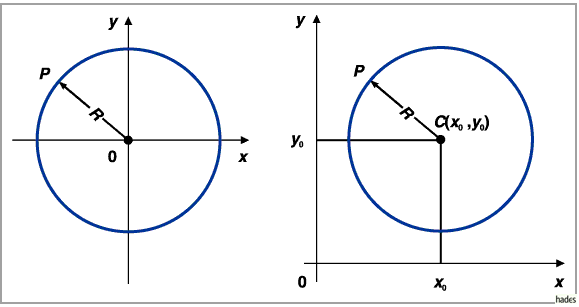
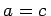
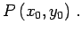

Die Gleichung des Kreises lautet in kartesischen Koordinaten für den in der linken Abbildung vorliegenden Fall, daß der Kreismittelpunkt im Koordinatenursprung liegt,

Liegt der Mittelpunkt im Punkt C(x0,y0) (rechte Abbildung), dann ergibt sich
Die allgemeine Gleichung zweiten Grades
| ax2 + 2bxy + cy2 +2dx + 2ey +f = 0 |
(3.337a) |
liefert dann und nur dann einen Kreis, wenn b = 0 und . Für diesen Fall kann die Gleichung stets auf die Form
| x2 + y2 + 2mx + 2ny + q = 0 |
(3.337b) |
gebracht werden. Für den Radius und die Koordinaten des Mittelpunktes gilt dann
Für q > m2 + n2 liefert die Gleichung keine reelle Kurve, für q = m2+ n2 ergibt sich ein einziger Punkt 